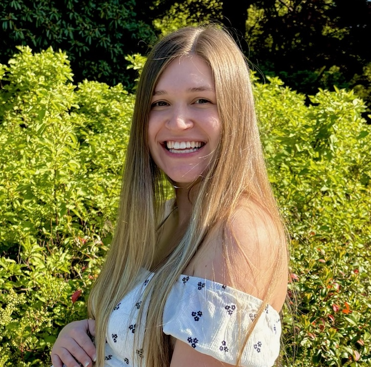
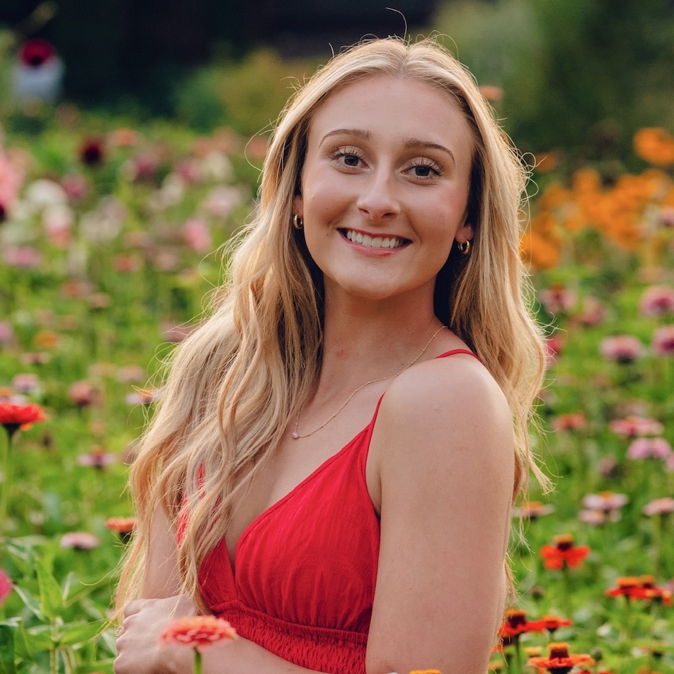

Our Story
How a science teacher, a toddler, and a whole lot of mud became a forest school.
Little Roots started the way most good things do. With a mom who couldn’t find what she was looking for.
I’m Mattison. Before Little Roots, I taught preschool in college, which is where my love of early childhood first took root. Then I spent years as a middle school science teacher, watching kids light up when they got to touch, build, and explore instead of just sitting and listening.
But when I became a mom, everything shifted. I watched my daughter reach for leaves and study bugs before she could walk, completely absorbed in the world around her. And I kept thinking, where is the space built for this? Where do toddlers and their grown-ups go to learn outside together?
The environment is the teacher. Let children lead. Trust the process.
The answer came when I spent time at A Little Darling School in Bellingham, WA, working alongside my mentor Netta Darling. Netta’s philosophy is simple and powerful. Those ideas changed how I see childhood and gave me the courage to build something of my own.
Little Roots Forest School is the class I wished existed when I was a new mom looking for connection, purpose, and a reason to get outside on a Thursday morning. It’s nature-based, child-led, and built for the whole family, not just the little ones.
Mattison Williams Founder and Lead Teacher
Meet Your Teachers

Mattison Williams
Founder & Lead Teacher- Licensed Washington State educator
- Bachelor’s in Elementary Education with a focus in general sciences from Western Washington University
- Former preschool and middle school science teacher (NGSS)
- Pediatric CPR & First Aid certified
- Mom to one nature-loving girl who’ll be right there with your little ones every Thursday

Katelyn
Co-Teacher- Early childhood education student
- YMCA youth program leader — coach, referee, summer camp
- Pediatric CPR & First Aid certified
- The calm, steady presence your little ones will love having in the forest every Thursday
What We Believe
The forest is the classroom.
We don’t bring worksheets outside. We let sticks and puddles and pinecones do the teaching. Every rock is a math lesson. Every bug is a science experiment. Every muddy handprint is art.
Kids lead, we follow.
If your toddler wants to poke the same mushroom for fifteen minutes, we let them. That deep focus? That IS learning. We’re not here to rush anyone through a checklist.
Everyone teaches, everyone learns.
You’re not here to watch from a bench — you’re part of the class. At Little Roots, grown-ups learn alongside their children, noticing what they notice and wondering what they wonder. By Week 3, you’ll catch yourself saying things like “I notice…” and “I wonder…” at the grocery store. That’s the goal.
Everything has a purpose.
When your baby dumps a cup of water for the 47th time, they’re not being difficult — they’re studying gravity and cause and effect. We’ll help you see the learning that’s already happening in their play.
This is for you, too.
Parenting little ones can feel isolating, especially in the PNW rain. Little Roots is a community — a place where you can connect with other families who care about the same things you do. You’ll leave each session with ideas, confidence, and maybe a friend who also doesn’t mind their kid eating dirt.